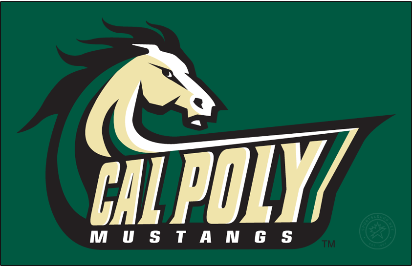

First Year at Cal Poly SLO
Published: Fall 2025
Starting my journey at California Polytechnic State University, San Luis Obispo, has been an incredible experience. As a first-year Computer Science student, I'm excited to share my initial impressions and goals for my time here at Cal Poly.
Why Cal Poly SLO?
Cal Poly's "Learn by Doing" philosophy immediately drew me to the university. The Computer Science program's emphasis on hands-on projects and practical experience aligns perfectly with my passion for building real-world solutions. The beautiful San Luis Obispo campus and strong industry connections made this the perfect choice for my education.
Academic Journey
My first quarter at Cal Poly includes exciting coursework:
- CSC 123: Fundamentals of Computer Science - Introduction to programming concepts and problem-solving
- MATH 143: Calculus III - Essential mathematical foundation for computer science
- ENGL 134: Writing and Rhetoric - Developing technical communication skills
- GE Courses: Exploring diverse subjects to build a well-rounded education
Campus Life and Opportunities
Beyond academics, Cal Poly offers incredible opportunities for growth. I'm actively seeking involvement in student organizations like the Computer Science and Software Engineering Club, and exploring research opportunities with faculty members.
The collaborative environment here encourages students to work together on projects, share knowledge, and build lasting professional relationships. I'm excited to participate in hackathons and coding competitions throughout my time here.
Goals for My Cal Poly Journey
- Excel in core computer science coursework
- Participate in undergraduate research projects
- Secure meaningful internships in the tech industry
- Contribute to open-source projects
- Build a strong network of peers and mentors
- Develop expertise in emerging technologies
Looking Forward
My first year at Cal Poly is just the beginning of what I hope will be an transformative educational experience. The combination of rigorous academics, hands-on learning, and the supportive Mustang community provides the perfect environment for growth as both a developer and a person.
I'm grateful for this opportunity and excited to see where this journey takes me. Go Mustangs! 🐎